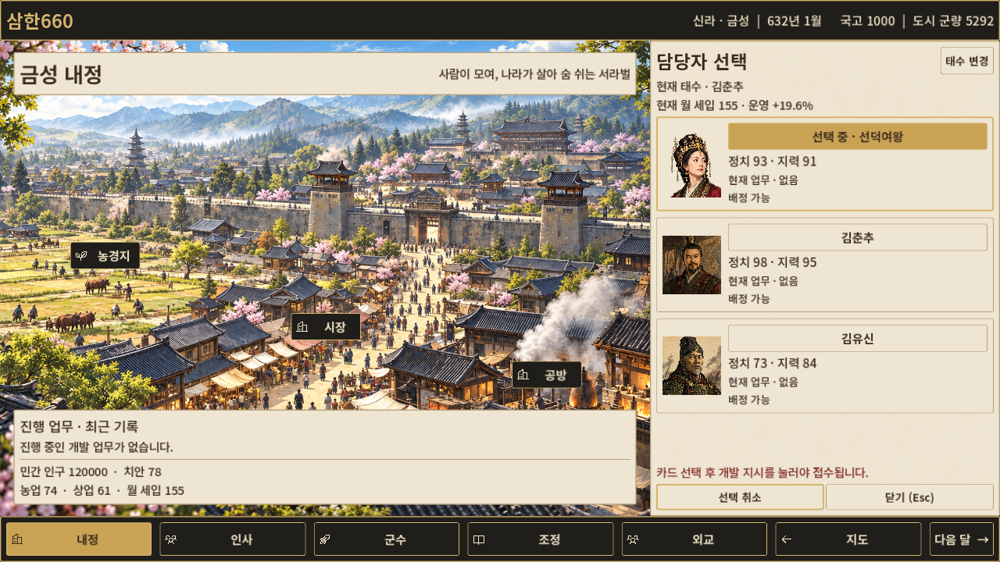
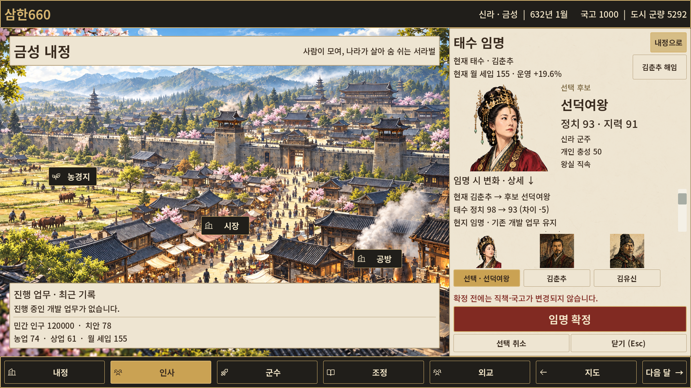

Living City V1.3 — 장식 자산 제작 준비
현재 게임은 V1.2입니다. 장식·서체를 적용하지 않았으며 게임 화면 변경은 없습니다. 아래는 632년 신라·금성의 V1.2 최종 캡처입니다.
이미지를 누르면 원본 해상도로 열립니다. V1.2 보고서의 과거 비교판·로그는 이 작은 묶음에서 제외했습니다. 이 HTML의 네 화면은 모두 ZIP에 포함돼 있습니다.
내정 기본 · 1280×720

담당자 후보 카드 · 1280×720

태수 임명 · 1280×720

태수 임명 · 1920×1080
